cluster¶
KMeans-minimadelon-fit_unsup¶
Benchmark setup
from sklearn.cluster import KMeans
from deps import load_data
kwargs = {'n_clusters': 9}
X, y, X_t, y_t = load_data('minimadelon')
obj = KMeans(**kwargs)
Benchmark statement
obj.fit(X)
Execution time
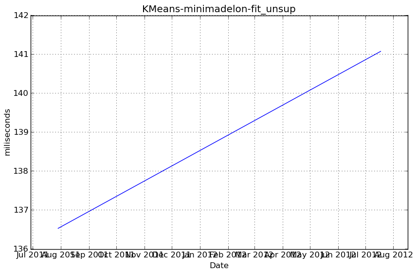Memory usage
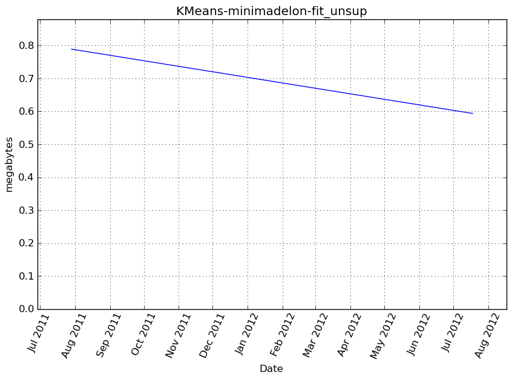Profiler output
14232 function calls in 0.167 seconds
Ordered by: cumulative time
ncalls tottime percall cumtime percall filename:lineno(function)
1 0.000 0.000 0.167 0.167 /hardmnt/goblin1/home/nivlad/balls/vbench/vbench/benchmark.py:257(f)
1 0.000 0.000 0.167 0.167 <f>:1(<module>)
1 0.000 0.000 0.167 0.167 /tmp/vb_sklearn/sklearn/cluster/k_means_.py:738(fit)
1 0.000 0.000 0.167 0.167 /tmp/vb_sklearn/sklearn/cluster/k_means_.py:151(k_means)
10 0.002 0.000 0.166 0.017 /tmp/vb_sklearn/sklearn/cluster/k_means_.py:303(_kmeans_single)
10 0.000 0.000 0.088 0.009 /tmp/vb_sklearn/sklearn/cluster/k_means_.py:525(_init_centroids)
10 0.018 0.002 0.088 0.009 /tmp/vb_sklearn/sklearn/cluster/k_means_.py:36(_k_init)
116 0.010 0.000 0.087 0.001 /tmp/vb_sklearn/sklearn/metrics/pairwise.py:101(euclidean_distances)
26 0.029 0.001 0.044 0.002 /tmp/vb_sklearn/sklearn/cluster/k_means_.py:478(_centers)
116 0.002 0.000 0.038 0.000 /tmp/vb_sklearn/sklearn/metrics/pairwise.py:52(check_pairwise_arrays)
26 0.001 0.000 0.030 0.001 /tmp/vb_sklearn/sklearn/cluster/k_means_.py:431(_labels_inertia)
349 0.002 0.000 0.030 0.000 /tmp/vb_sklearn/sklearn/utils/validation.py:71(atleast2d_or_csr)
26 0.005 0.000 0.029 0.001 /tmp/vb_sklearn/sklearn/cluster/k_means_.py:414(_labels_inertia_precompute_dense)
116 0.002 0.000 0.024 0.000 /tmp/vb_sklearn/sklearn/utils/extmath.py:70(safe_sparse_dot)
581 0.006 0.000 0.020 0.000 /tmp/vb_sklearn/sklearn/utils/validation.py:10(assert_all_finite)
1086 0.003 0.000 0.020 0.000 /home/nivlad/.local/lib/python2.7/site-packages/scipy/sparse/base.py:553(isspmatrix)
1080 0.019 0.000 0.019 0.000 {method 'sum' of 'numpy.ndarray' objects}
116 0.019 0.000 0.019 0.000 {numpy.core.multiarray.dot}
1086 0.011 0.000 0.017 0.000 /home/nivlad/.local/lib/python2.7/site-packages/scipy/sparse/sputils.py:116(_isinstance)
232 0.001 0.000 0.016 0.000 /tmp/vb_sklearn/sklearn/utils/validation.py:23(safe_asarray)
236 0.012 0.000 0.012 0.000 {method 'mean' of 'numpy.ndarray' objects}
349 0.002 0.000 0.010 0.000 /tmp/vb_sklearn/sklearn/utils/validation.py:66(array2d)
349 0.004 0.000 0.007 0.000 /home/nivlad/.local/lib/python2.7/site-packages/numpy/core/shape_base.py:58(atleast_2d)
2172 0.004 0.000 0.004 0.000 {method 'split' of 'str' objects}
142 0.001 0.000 0.003 0.000 /home/nivlad/.local/lib/python2.7/site-packages/numpy/core/fromnumeric.py:1379(sum)
581 0.002 0.000 0.003 0.000 /home/nivlad/.local/lib/python2.7/site-packages/numpy/core/numeric.py:167(asarray)
234 0.001 0.000 0.003 0.000 /home/nivlad/.local/lib/python2.7/site-packages/numpy/core/fromnumeric.py:1508(any)
930 0.003 0.000 0.003 0.000 {numpy.core.multiarray.array}
1292 0.002 0.000 0.002 0.000 {isinstance}
349 0.001 0.000 0.002 0.000 /home/nivlad/.local/lib/python2.7/site-packages/numpy/core/numeric.py:237(asanyarray)
234 0.002 0.000 0.002 0.000 {method 'any' of 'numpy.ndarray' objects}
1279 0.001 0.000 0.001 0.000 {len}
80 0.001 0.000 0.001 0.000 {method 'cumsum' of 'numpy.ndarray' objects}
84 0.001 0.000 0.001 0.000 {method 'copy' of 'numpy.ndarray' objects}
114 0.001 0.000 0.001 0.000 {numpy.core.multiarray.empty}
80 0.000 0.000 0.001 0.000 /home/nivlad/.local/lib/python2.7/site-packages/numpy/core/fromnumeric.py:757(searchsorted)
80 0.001 0.000 0.001 0.000 {method 'random_sample' of 'mtrand.RandomState' objects}
1 0.000 0.000 0.000 0.000 /tmp/vb_sklearn/sklearn/cluster/k_means_.py:142(_tolerance)
26 0.000 0.000 0.000 0.000 /home/nivlad/.local/lib/python2.7/site-packages/numpy/core/numeric.py:1791(ones)
1 0.000 0.000 0.000 0.000 /home/nivlad/.local/lib/python2.7/site-packages/numpy/core/fromnumeric.py:2470(var)
1 0.000 0.000 0.000 0.000 {method 'var' of 'numpy.ndarray' objects}
80 0.000 0.000 0.000 0.000 {method 'searchsorted' of 'numpy.ndarray' objects}
349 0.000 0.000 0.000 0.000 {method 'append' of 'list' objects}
78 0.000 0.000 0.000 0.000 {method 'fill' of 'numpy.ndarray' objects}
32 0.000 0.000 0.000 0.000 /tmp/vb_sklearn/sklearn/utils/validation.py:177(check_random_state)
1 0.000 0.000 0.000 0.000 /tmp/vb_sklearn/sklearn/cluster/k_means_.py:710(_check_fit_data)
63 0.000 0.000 0.000 0.000 {range}
1 0.000 0.000 0.000 0.000 /tmp/vb_sklearn/sklearn/cluster/k_means_.py:404(_squared_norms)
1 0.000 0.000 0.000 0.000 /tmp/vb_sklearn/sklearn/utils/validation.py:33(as_float_array)
10 0.000 0.000 0.000 0.000 {numpy.core.multiarray.zeros}
1 0.000 0.000 0.000 0.000 /home/nivlad/.local/lib/python2.7/site-packages/numpy/core/fromnumeric.py:2299(mean)
10 0.000 0.000 0.000 0.000 {method 'randint' of 'mtrand.RandomState' objects}
1 0.000 0.000 0.000 0.000 {hasattr}
1 0.000 0.000 0.000 0.000 {method 'disable' of '_lsprof.Profiler' objects}
KMeans-minimadelon-predict_unsup¶
Benchmark setup
from sklearn.cluster import KMeans
from deps import load_data
kwargs = {'n_clusters': 9}
X, y, X_t, y_t = load_data('minimadelon')
obj = KMeans(**kwargs)
obj.fit(X)
Benchmark statement
obj.predict(X_t)
Execution time
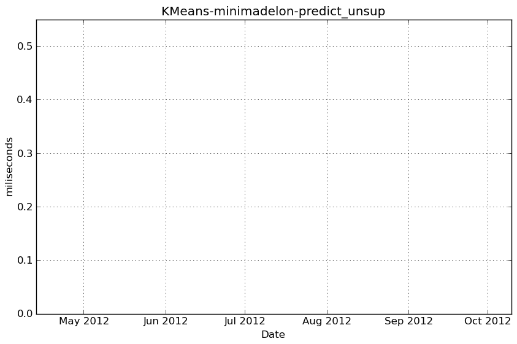Memory usage
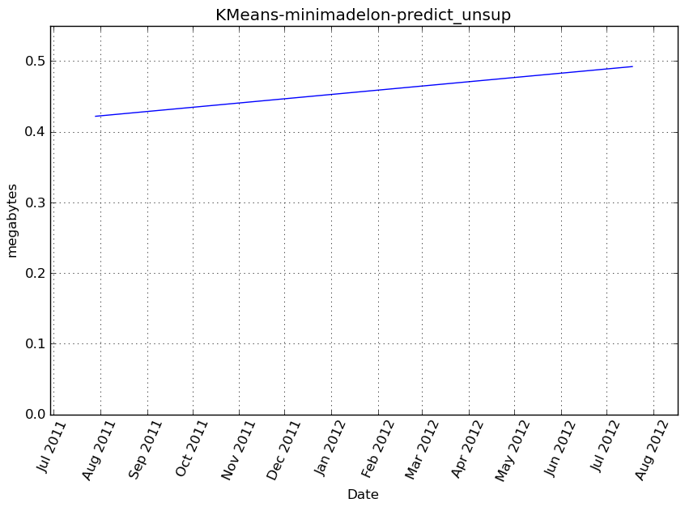Profiler output
147 function calls in 0.001 seconds
Ordered by: cumulative time
ncalls tottime percall cumtime percall filename:lineno(function)
1 0.000 0.000 0.001 0.001 /hardmnt/goblin1/home/nivlad/balls/vbench/vbench/benchmark.py:257(f)
1 0.000 0.000 0.001 0.001 <f>:1(<module>)
1 0.000 0.000 0.001 0.001 /tmp/vb_sklearn/sklearn/cluster/k_means_.py:789(predict)
1 0.000 0.000 0.001 0.001 /tmp/vb_sklearn/sklearn/cluster/k_means_.py:431(_labels_inertia)
1 0.000 0.000 0.001 0.001 /tmp/vb_sklearn/sklearn/cluster/k_means_.py:414(_labels_inertia_precompute_dense)
1 0.000 0.000 0.001 0.001 /tmp/vb_sklearn/sklearn/metrics/pairwise.py:101(euclidean_distances)
4 0.000 0.000 0.000 0.000 /tmp/vb_sklearn/sklearn/utils/validation.py:71(atleast2d_or_csr)
1 0.000 0.000 0.000 0.000 /tmp/vb_sklearn/sklearn/metrics/pairwise.py:52(check_pairwise_arrays)
1 0.000 0.000 0.000 0.000 /tmp/vb_sklearn/sklearn/utils/extmath.py:70(safe_sparse_dot)
6 0.000 0.000 0.000 0.000 /tmp/vb_sklearn/sklearn/utils/validation.py:10(assert_all_finite)
11 0.000 0.000 0.000 0.000 /home/nivlad/.local/lib/python2.7/site-packages/scipy/sparse/base.py:553(isspmatrix)
9 0.000 0.000 0.000 0.000 {method 'sum' of 'numpy.ndarray' objects}
1 0.000 0.000 0.000 0.000 {numpy.core.multiarray.dot}
11 0.000 0.000 0.000 0.000 /home/nivlad/.local/lib/python2.7/site-packages/scipy/sparse/sputils.py:116(_isinstance)
1 0.000 0.000 0.000 0.000 /tmp/vb_sklearn/sklearn/cluster/k_means_.py:718(_check_test_data)
4 0.000 0.000 0.000 0.000 /tmp/vb_sklearn/sklearn/utils/validation.py:66(array2d)
2 0.000 0.000 0.000 0.000 /tmp/vb_sklearn/sklearn/utils/validation.py:23(safe_asarray)
4 0.000 0.000 0.000 0.000 /home/nivlad/.local/lib/python2.7/site-packages/numpy/core/shape_base.py:58(atleast_2d)
1 0.000 0.000 0.000 0.000 /tmp/vb_sklearn/sklearn/cluster/k_means_.py:404(_squared_norms)
22 0.000 0.000 0.000 0.000 {method 'split' of 'str' objects}
6 0.000 0.000 0.000 0.000 /home/nivlad/.local/lib/python2.7/site-packages/numpy/core/numeric.py:167(asarray)
10 0.000 0.000 0.000 0.000 {numpy.core.multiarray.array}
4 0.000 0.000 0.000 0.000 /home/nivlad/.local/lib/python2.7/site-packages/numpy/core/numeric.py:237(asanyarray)
1 0.000 0.000 0.000 0.000 /home/nivlad/.local/lib/python2.7/site-packages/numpy/core/fromnumeric.py:1379(sum)
1 0.000 0.000 0.000 0.000 /home/nivlad/.local/lib/python2.7/site-packages/numpy/core/numeric.py:1791(ones)
12 0.000 0.000 0.000 0.000 {isinstance}
3 0.000 0.000 0.000 0.000 {numpy.core.multiarray.empty}
3 0.000 0.000 0.000 0.000 {method 'fill' of 'numpy.ndarray' objects}
1 0.000 0.000 0.000 0.000 /tmp/vb_sklearn/sklearn/cluster/k_means_.py:734(_check_fitted)
14 0.000 0.000 0.000 0.000 {len}
1 0.000 0.000 0.000 0.000 {numpy.core.multiarray.zeros}
4 0.000 0.000 0.000 0.000 {method 'append' of 'list' objects}
1 0.000 0.000 0.000 0.000 {range}
1 0.000 0.000 0.000 0.000 {hasattr}
1 0.000 0.000 0.000 0.000 {method 'disable' of '_lsprof.Profiler' objects}
KMeans-blobs-fit_unsup¶
Benchmark setup
from sklearn.cluster import KMeans
from deps import load_data
kwargs = {'n_clusters': 9}
X, y, X_t, y_t = load_data('blobs')
obj = KMeans(**kwargs)
Benchmark statement
obj.fit(X)
Execution time
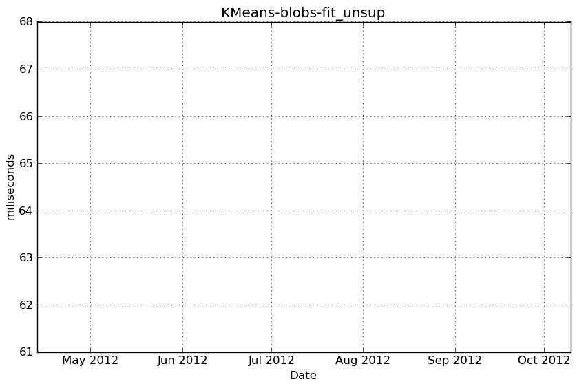Memory usage
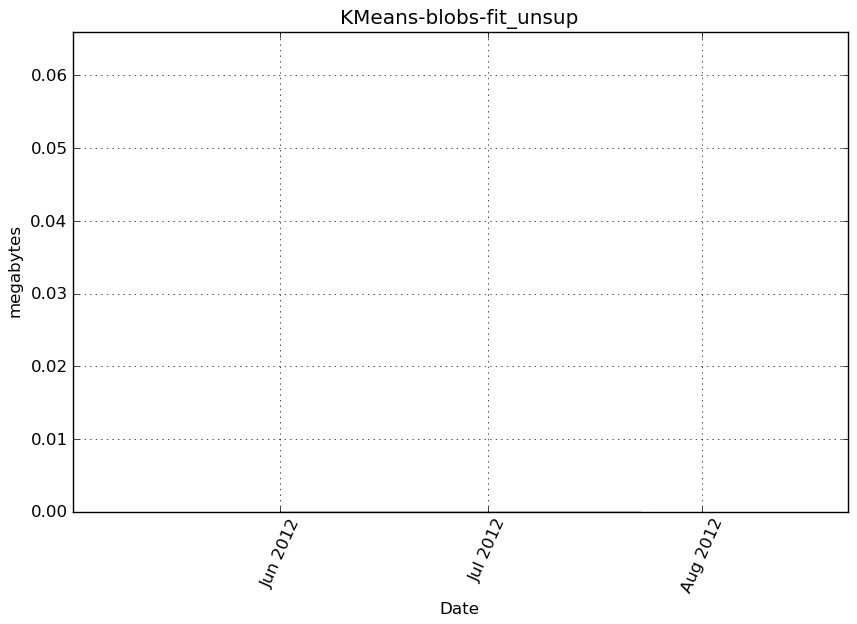Profiler output
14075 function calls in 0.159 seconds
Ordered by: cumulative time
ncalls tottime percall cumtime percall filename:lineno(function)
1 0.000 0.000 0.159 0.159 /hardmnt/goblin1/home/nivlad/balls/vbench/vbench/benchmark.py:257(f)
1 0.000 0.000 0.159 0.159 <f>:1(<module>)
1 0.000 0.000 0.159 0.159 /tmp/vb_sklearn/sklearn/cluster/k_means_.py:738(fit)
1 0.000 0.000 0.159 0.159 /tmp/vb_sklearn/sklearn/cluster/k_means_.py:151(k_means)
10 0.001 0.000 0.158 0.016 /tmp/vb_sklearn/sklearn/cluster/k_means_.py:303(_kmeans_single)
115 0.012 0.000 0.089 0.001 /tmp/vb_sklearn/sklearn/metrics/pairwise.py:101(euclidean_distances)
10 0.000 0.000 0.085 0.008 /tmp/vb_sklearn/sklearn/cluster/k_means_.py:525(_init_centroids)
10 0.012 0.001 0.084 0.008 /tmp/vb_sklearn/sklearn/cluster/k_means_.py:36(_k_init)
25 0.029 0.001 0.038 0.002 /tmp/vb_sklearn/sklearn/cluster/k_means_.py:478(_centers)
115 0.002 0.000 0.037 0.000 /tmp/vb_sklearn/sklearn/metrics/pairwise.py:52(check_pairwise_arrays)
25 0.001 0.000 0.033 0.001 /tmp/vb_sklearn/sklearn/cluster/k_means_.py:431(_labels_inertia)
25 0.007 0.000 0.032 0.001 /tmp/vb_sklearn/sklearn/cluster/k_means_.py:414(_labels_inertia_precompute_dense)
346 0.002 0.000 0.029 0.000 /tmp/vb_sklearn/sklearn/utils/validation.py:71(atleast2d_or_csr)
115 0.002 0.000 0.027 0.000 /tmp/vb_sklearn/sklearn/utils/extmath.py:70(safe_sparse_dot)
115 0.022 0.000 0.022 0.000 {numpy.core.multiarray.dot}
1076 0.003 0.000 0.020 0.000 /home/nivlad/.local/lib/python2.7/site-packages/scipy/sparse/base.py:553(isspmatrix)
576 0.006 0.000 0.019 0.000 /tmp/vb_sklearn/sklearn/utils/validation.py:10(assert_all_finite)
1072 0.018 0.000 0.018 0.000 {method 'sum' of 'numpy.ndarray' objects}
1076 0.011 0.000 0.017 0.000 /home/nivlad/.local/lib/python2.7/site-packages/scipy/sparse/sputils.py:116(_isinstance)
230 0.001 0.000 0.015 0.000 /tmp/vb_sklearn/sklearn/utils/validation.py:23(safe_asarray)
346 0.002 0.000 0.010 0.000 /tmp/vb_sklearn/sklearn/utils/validation.py:66(array2d)
346 0.004 0.000 0.007 0.000 /home/nivlad/.local/lib/python2.7/site-packages/numpy/core/shape_base.py:58(atleast_2d)
227 0.006 0.000 0.006 0.000 {method 'mean' of 'numpy.ndarray' objects}
2152 0.004 0.000 0.004 0.000 {method 'split' of 'str' objects}
576 0.002 0.000 0.003 0.000 /home/nivlad/.local/lib/python2.7/site-packages/numpy/core/numeric.py:167(asarray)
922 0.003 0.000 0.003 0.000 {numpy.core.multiarray.array}
225 0.001 0.000 0.003 0.000 /home/nivlad/.local/lib/python2.7/site-packages/numpy/core/fromnumeric.py:1508(any)
140 0.001 0.000 0.002 0.000 /home/nivlad/.local/lib/python2.7/site-packages/numpy/core/fromnumeric.py:1379(sum)
1280 0.002 0.000 0.002 0.000 {isinstance}
346 0.001 0.000 0.002 0.000 /home/nivlad/.local/lib/python2.7/site-packages/numpy/core/numeric.py:237(asanyarray)
225 0.002 0.000 0.002 0.000 {method 'any' of 'numpy.ndarray' objects}
80 0.001 0.000 0.001 0.000 {method 'cumsum' of 'numpy.ndarray' objects}
1268 0.001 0.000 0.001 0.000 {len}
80 0.000 0.000 0.001 0.000 /home/nivlad/.local/lib/python2.7/site-packages/numpy/core/fromnumeric.py:757(searchsorted)
110 0.001 0.000 0.001 0.000 {numpy.core.multiarray.empty}
80 0.001 0.000 0.001 0.000 {method 'random_sample' of 'mtrand.RandomState' objects}
1 0.000 0.000 0.000 0.000 /tmp/vb_sklearn/sklearn/cluster/k_means_.py:142(_tolerance)
25 0.000 0.000 0.000 0.000 /home/nivlad/.local/lib/python2.7/site-packages/numpy/core/numeric.py:1791(ones)
80 0.000 0.000 0.000 0.000 {method 'searchsorted' of 'numpy.ndarray' objects}
79 0.000 0.000 0.000 0.000 {method 'copy' of 'numpy.ndarray' objects}
1 0.000 0.000 0.000 0.000 /home/nivlad/.local/lib/python2.7/site-packages/numpy/core/fromnumeric.py:2470(var)
1 0.000 0.000 0.000 0.000 {method 'var' of 'numpy.ndarray' objects}
346 0.000 0.000 0.000 0.000 {method 'append' of 'list' objects}
75 0.000 0.000 0.000 0.000 {method 'fill' of 'numpy.ndarray' objects}
32 0.000 0.000 0.000 0.000 /tmp/vb_sklearn/sklearn/utils/validation.py:177(check_random_state)
1 0.000 0.000 0.000 0.000 /tmp/vb_sklearn/sklearn/cluster/k_means_.py:710(_check_fit_data)
61 0.000 0.000 0.000 0.000 {range}
1 0.000 0.000 0.000 0.000 /tmp/vb_sklearn/sklearn/cluster/k_means_.py:404(_squared_norms)
1 0.000 0.000 0.000 0.000 /tmp/vb_sklearn/sklearn/utils/validation.py:33(as_float_array)
10 0.000 0.000 0.000 0.000 {numpy.core.multiarray.zeros}
10 0.000 0.000 0.000 0.000 {method 'randint' of 'mtrand.RandomState' objects}
1 0.000 0.000 0.000 0.000 /home/nivlad/.local/lib/python2.7/site-packages/numpy/core/fromnumeric.py:2299(mean)
1 0.000 0.000 0.000 0.000 {hasattr}
1 0.000 0.000 0.000 0.000 {method 'disable' of '_lsprof.Profiler' objects}
KMeans-blobs-predict_unsup¶
Benchmark setup
from sklearn.cluster import KMeans
from deps import load_data
kwargs = {'n_clusters': 9}
X, y, X_t, y_t = load_data('blobs')
obj = KMeans(**kwargs)
obj.fit(X)
Benchmark statement
obj.predict(X_t)
Execution time
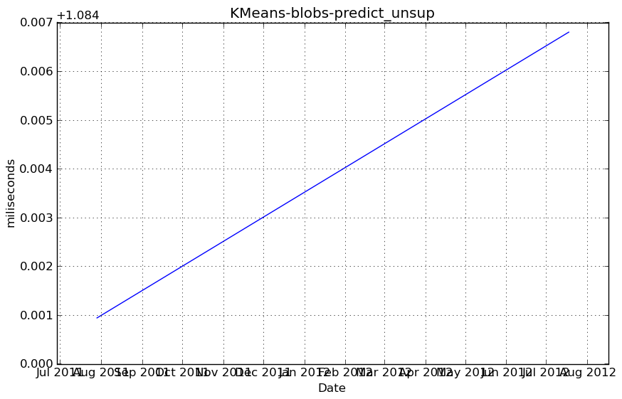Memory usage
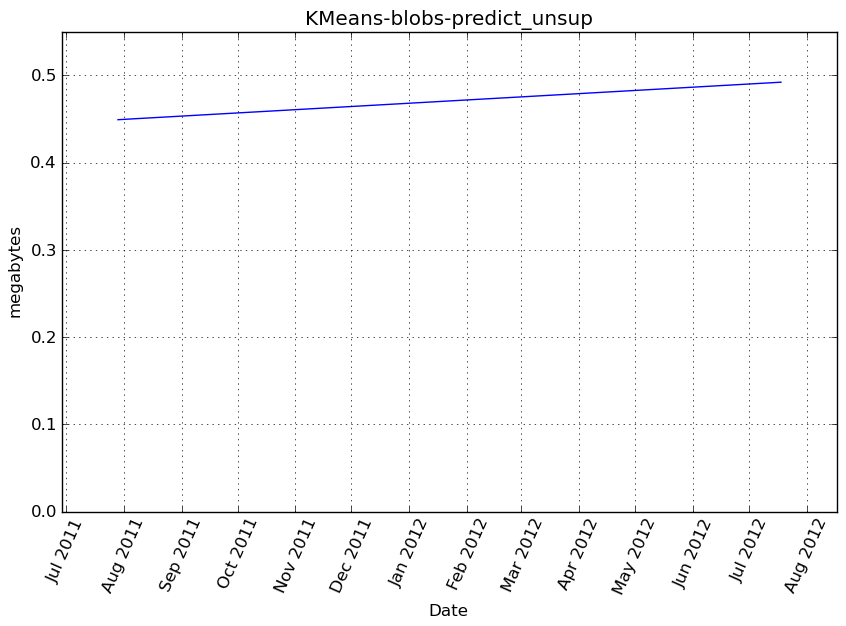Profiler output
147 function calls in 0.001 seconds
Ordered by: cumulative time
ncalls tottime percall cumtime percall filename:lineno(function)
1 0.000 0.000 0.001 0.001 /hardmnt/goblin1/home/nivlad/balls/vbench/vbench/benchmark.py:257(f)
1 0.000 0.000 0.001 0.001 <f>:1(<module>)
1 0.000 0.000 0.001 0.001 /tmp/vb_sklearn/sklearn/cluster/k_means_.py:789(predict)
1 0.000 0.000 0.001 0.001 /tmp/vb_sklearn/sklearn/cluster/k_means_.py:431(_labels_inertia)
1 0.000 0.000 0.001 0.001 /tmp/vb_sklearn/sklearn/cluster/k_means_.py:414(_labels_inertia_precompute_dense)
1 0.000 0.000 0.001 0.001 /tmp/vb_sklearn/sklearn/metrics/pairwise.py:101(euclidean_distances)
4 0.000 0.000 0.000 0.000 /tmp/vb_sklearn/sklearn/utils/validation.py:71(atleast2d_or_csr)
1 0.000 0.000 0.000 0.000 /tmp/vb_sklearn/sklearn/metrics/pairwise.py:52(check_pairwise_arrays)
1 0.000 0.000 0.000 0.000 /tmp/vb_sklearn/sklearn/utils/extmath.py:70(safe_sparse_dot)
1 0.000 0.000 0.000 0.000 {numpy.core.multiarray.dot}
11 0.000 0.000 0.000 0.000 /home/nivlad/.local/lib/python2.7/site-packages/scipy/sparse/base.py:553(isspmatrix)
6 0.000 0.000 0.000 0.000 /tmp/vb_sklearn/sklearn/utils/validation.py:10(assert_all_finite)
9 0.000 0.000 0.000 0.000 {method 'sum' of 'numpy.ndarray' objects}
11 0.000 0.000 0.000 0.000 /home/nivlad/.local/lib/python2.7/site-packages/scipy/sparse/sputils.py:116(_isinstance)
1 0.000 0.000 0.000 0.000 /tmp/vb_sklearn/sklearn/cluster/k_means_.py:718(_check_test_data)
4 0.000 0.000 0.000 0.000 /tmp/vb_sklearn/sklearn/utils/validation.py:66(array2d)
2 0.000 0.000 0.000 0.000 /tmp/vb_sklearn/sklearn/utils/validation.py:23(safe_asarray)
1 0.000 0.000 0.000 0.000 /tmp/vb_sklearn/sklearn/cluster/k_means_.py:404(_squared_norms)
4 0.000 0.000 0.000 0.000 /home/nivlad/.local/lib/python2.7/site-packages/numpy/core/shape_base.py:58(atleast_2d)
22 0.000 0.000 0.000 0.000 {method 'split' of 'str' objects}
6 0.000 0.000 0.000 0.000 /home/nivlad/.local/lib/python2.7/site-packages/numpy/core/numeric.py:167(asarray)
10 0.000 0.000 0.000 0.000 {numpy.core.multiarray.array}
4 0.000 0.000 0.000 0.000 /home/nivlad/.local/lib/python2.7/site-packages/numpy/core/numeric.py:237(asanyarray)
1 0.000 0.000 0.000 0.000 /home/nivlad/.local/lib/python2.7/site-packages/numpy/core/numeric.py:1791(ones)
12 0.000 0.000 0.000 0.000 {isinstance}
1 0.000 0.000 0.000 0.000 /home/nivlad/.local/lib/python2.7/site-packages/numpy/core/fromnumeric.py:1379(sum)
3 0.000 0.000 0.000 0.000 {numpy.core.multiarray.empty}
3 0.000 0.000 0.000 0.000 {method 'fill' of 'numpy.ndarray' objects}
14 0.000 0.000 0.000 0.000 {len}
1 0.000 0.000 0.000 0.000 /tmp/vb_sklearn/sklearn/cluster/k_means_.py:734(_check_fitted)
1 0.000 0.000 0.000 0.000 {numpy.core.multiarray.zeros}
4 0.000 0.000 0.000 0.000 {method 'append' of 'list' objects}
1 0.000 0.000 0.000 0.000 {range}
1 0.000 0.000 0.000 0.000 {hasattr}
1 0.000 0.000 0.000 0.000 {method 'disable' of '_lsprof.Profiler' objects}
MiniBatchKMeans-minimadelon-fit_unsup¶
Benchmark setup
from sklearn.cluster import MiniBatchKMeans
from deps import load_data
kwargs = {'n_clusters': 9}
X, y, X_t, y_t = load_data('minimadelon')
obj = MiniBatchKMeans(**kwargs)
Benchmark statement
obj.fit(X)
Execution time
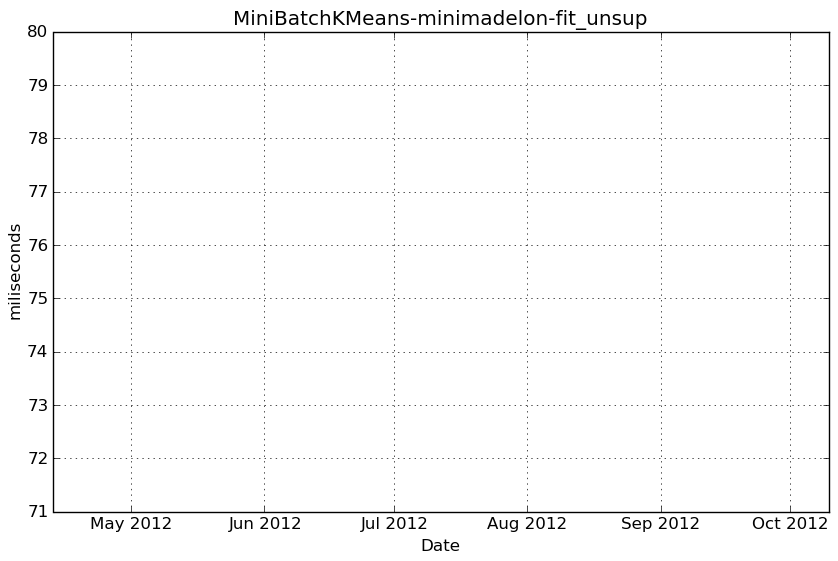Memory usage
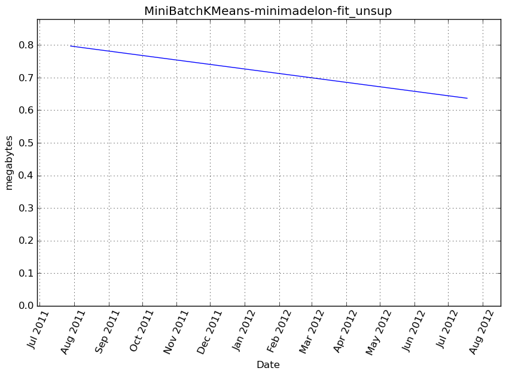Profiler output
9655 function calls in 0.351 seconds
Ordered by: cumulative time
ncalls tottime percall cumtime percall filename:lineno(function)
1 0.000 0.000 0.351 0.351 /hardmnt/goblin1/home/nivlad/balls/vbench/vbench/benchmark.py:257(f)
1 0.000 0.000 0.351 0.351 <f>:1(<module>)
1 0.094 0.094 0.351 0.351 /tmp/vb_sklearn/sklearn/cluster/k_means_.py:1067(fit)
38 0.122 0.003 0.223 0.006 /tmp/vb_sklearn/sklearn/cluster/k_means_.py:830(_mini_batch_step)
69 0.007 0.000 0.090 0.001 /tmp/vb_sklearn/sklearn/metrics/pairwise.py:101(euclidean_distances)
42 0.001 0.000 0.084 0.002 /tmp/vb_sklearn/sklearn/cluster/k_means_.py:431(_labels_inertia)
42 0.009 0.000 0.081 0.002 /tmp/vb_sklearn/sklearn/cluster/k_means_.py:414(_labels_inertia_precompute_dense)
69 0.001 0.000 0.043 0.001 /tmp/vb_sklearn/sklearn/utils/extmath.py:70(safe_sparse_dot)
69 0.040 0.001 0.040 0.001 {numpy.core.multiarray.dot}
1226 0.036 0.000 0.036 0.000 {method 'sum' of 'numpy.ndarray' objects}
69 0.001 0.000 0.030 0.000 /tmp/vb_sklearn/sklearn/metrics/pairwise.py:52(check_pairwise_arrays)
3 0.000 0.000 0.027 0.009 /tmp/vb_sklearn/sklearn/cluster/k_means_.py:525(_init_centroids)
3 0.006 0.002 0.027 0.009 /tmp/vb_sklearn/sklearn/cluster/k_means_.py:36(_k_init)
207 0.001 0.000 0.021 0.000 /tmp/vb_sklearn/sklearn/utils/validation.py:71(atleast2d_or_csr)
345 0.004 0.000 0.019 0.000 /tmp/vb_sklearn/sklearn/utils/validation.py:10(assert_all_finite)
397 0.002 0.000 0.018 0.000 /home/nivlad/.local/lib/python2.7/site-packages/numpy/core/fromnumeric.py:1379(sum)
138 0.001 0.000 0.013 0.000 /tmp/vb_sklearn/sklearn/utils/validation.py:23(safe_asarray)
664 0.002 0.000 0.013 0.000 /home/nivlad/.local/lib/python2.7/site-packages/scipy/sparse/base.py:553(isspmatrix)
664 0.007 0.000 0.011 0.000 /home/nivlad/.local/lib/python2.7/site-packages/scipy/sparse/sputils.py:116(_isinstance)
207 0.001 0.000 0.006 0.000 /tmp/vb_sklearn/sklearn/utils/validation.py:66(array2d)
207 0.002 0.000 0.004 0.000 /home/nivlad/.local/lib/python2.7/site-packages/numpy/core/shape_base.py:58(atleast_2d)
1328 0.002 0.000 0.002 0.000 {method 'split' of 'str' objects}
1073 0.002 0.000 0.002 0.000 {isinstance}
345 0.001 0.000 0.002 0.000 /home/nivlad/.local/lib/python2.7/site-packages/numpy/core/numeric.py:167(asarray)
553 0.002 0.000 0.002 0.000 {numpy.core.multiarray.array}
207 0.001 0.000 0.001 0.000 /home/nivlad/.local/lib/python2.7/site-packages/numpy/core/numeric.py:237(asanyarray)
35 0.001 0.000 0.001 0.000 /tmp/vb_sklearn/sklearn/cluster/k_means_.py:898(_mini_batch_convergence)
129 0.001 0.000 0.001 0.000 {numpy.core.multiarray.empty}
42 0.000 0.000 0.001 0.000 /home/nivlad/.local/lib/python2.7/site-packages/numpy/core/numeric.py:1791(ones)
760 0.001 0.000 0.001 0.000 {len}
126 0.001 0.000 0.001 0.000 {method 'fill' of 'numpy.ndarray' objects}
36 0.000 0.000 0.000 0.000 {method 'random_integers' of 'mtrand.RandomState' objects}
208 0.000 0.000 0.000 0.000 {method 'append' of 'list' objects}
24 0.000 0.000 0.000 0.000 {method 'cumsum' of 'numpy.ndarray' objects}
1 0.000 0.000 0.000 0.000 /tmp/vb_sklearn/sklearn/cluster/k_means_.py:404(_squared_norms)
24 0.000 0.000 0.000 0.000 {method 'random_sample' of 'mtrand.RandomState' objects}
24 0.000 0.000 0.000 0.000 /home/nivlad/.local/lib/python2.7/site-packages/numpy/core/fromnumeric.py:757(searchsorted)
81 0.000 0.000 0.000 0.000 {range}
140 0.000 0.000 0.000 0.000 {method 'get' of 'dict' objects}
1 0.000 0.000 0.000 0.000 /tmp/vb_sklearn/sklearn/utils/validation.py:95(check_arrays)
24 0.000 0.000 0.000 0.000 {method 'searchsorted' of 'numpy.ndarray' objects}
7 0.000 0.000 0.000 0.000 /tmp/vb_sklearn/sklearn/utils/validation.py:177(check_random_state)
9 0.000 0.000 0.000 0.000 {numpy.core.multiarray.zeros}
2 0.000 0.000 0.000 0.000 /tmp/vb_sklearn/sklearn/utils/validation.py:88(_num_samples)
1 0.000 0.000 0.000 0.000 /home/nivlad/.local/lib/python2.7/site-packages/numpy/core/numeric.py:289(ascontiguousarray)
5 0.000 0.000 0.000 0.000 {hasattr}
3 0.000 0.000 0.000 0.000 {method 'randint' of 'mtrand.RandomState' objects}
4 0.000 0.000 0.000 0.000 {method 'pop' of 'dict' objects}
1 0.000 0.000 0.000 0.000 {method 'disable' of '_lsprof.Profiler' objects}
MiniBatchKMeans-minimadelon-predict_unsup¶
Benchmark setup
from sklearn.cluster import MiniBatchKMeans
from deps import load_data
kwargs = {'n_clusters': 9}
X, y, X_t, y_t = load_data('minimadelon')
obj = MiniBatchKMeans(**kwargs)
obj.fit(X)
Benchmark statement
obj.predict(X_t)
Execution time
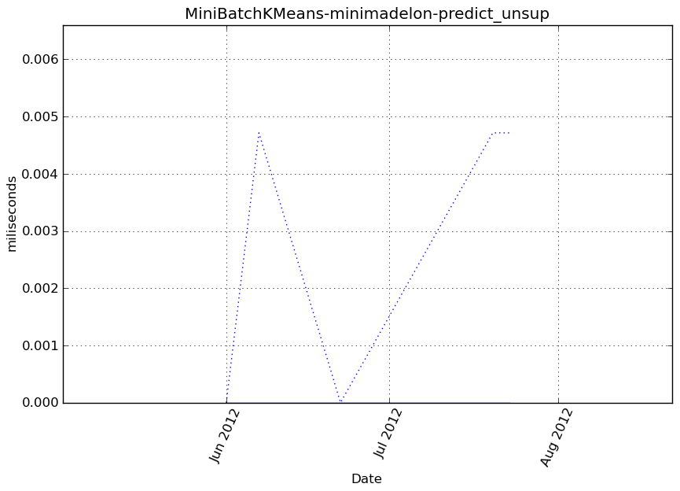Memory usage
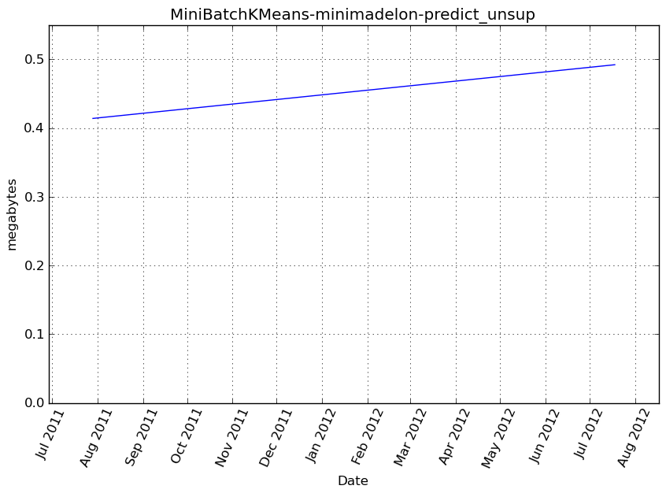Profiler output
147 function calls in 0.001 seconds
Ordered by: cumulative time
ncalls tottime percall cumtime percall filename:lineno(function)
1 0.000 0.000 0.001 0.001 /hardmnt/goblin1/home/nivlad/balls/vbench/vbench/benchmark.py:257(f)
1 0.000 0.000 0.001 0.001 <f>:1(<module>)
1 0.000 0.000 0.001 0.001 /tmp/vb_sklearn/sklearn/cluster/k_means_.py:789(predict)
1 0.000 0.000 0.001 0.001 /tmp/vb_sklearn/sklearn/cluster/k_means_.py:431(_labels_inertia)
1 0.000 0.000 0.001 0.001 /tmp/vb_sklearn/sklearn/cluster/k_means_.py:414(_labels_inertia_precompute_dense)
1 0.000 0.000 0.001 0.001 /tmp/vb_sklearn/sklearn/metrics/pairwise.py:101(euclidean_distances)
4 0.000 0.000 0.000 0.000 /tmp/vb_sklearn/sklearn/utils/validation.py:71(atleast2d_or_csr)
1 0.000 0.000 0.000 0.000 /tmp/vb_sklearn/sklearn/metrics/pairwise.py:52(check_pairwise_arrays)
1 0.000 0.000 0.000 0.000 /tmp/vb_sklearn/sklearn/utils/extmath.py:70(safe_sparse_dot)
6 0.000 0.000 0.000 0.000 /tmp/vb_sklearn/sklearn/utils/validation.py:10(assert_all_finite)
9 0.000 0.000 0.000 0.000 {method 'sum' of 'numpy.ndarray' objects}
11 0.000 0.000 0.000 0.000 /home/nivlad/.local/lib/python2.7/site-packages/scipy/sparse/base.py:553(isspmatrix)
1 0.000 0.000 0.000 0.000 {numpy.core.multiarray.dot}
11 0.000 0.000 0.000 0.000 /home/nivlad/.local/lib/python2.7/site-packages/scipy/sparse/sputils.py:116(_isinstance)
1 0.000 0.000 0.000 0.000 /tmp/vb_sklearn/sklearn/cluster/k_means_.py:718(_check_test_data)
2 0.000 0.000 0.000 0.000 /tmp/vb_sklearn/sklearn/utils/validation.py:23(safe_asarray)
4 0.000 0.000 0.000 0.000 /tmp/vb_sklearn/sklearn/utils/validation.py:66(array2d)
1 0.000 0.000 0.000 0.000 /tmp/vb_sklearn/sklearn/cluster/k_means_.py:404(_squared_norms)
4 0.000 0.000 0.000 0.000 /home/nivlad/.local/lib/python2.7/site-packages/numpy/core/shape_base.py:58(atleast_2d)
22 0.000 0.000 0.000 0.000 {method 'split' of 'str' objects}
10 0.000 0.000 0.000 0.000 {numpy.core.multiarray.array}
6 0.000 0.000 0.000 0.000 /home/nivlad/.local/lib/python2.7/site-packages/numpy/core/numeric.py:167(asarray)
4 0.000 0.000 0.000 0.000 /home/nivlad/.local/lib/python2.7/site-packages/numpy/core/numeric.py:237(asanyarray)
1 0.000 0.000 0.000 0.000 /home/nivlad/.local/lib/python2.7/site-packages/numpy/core/fromnumeric.py:1379(sum)
12 0.000 0.000 0.000 0.000 {isinstance}
1 0.000 0.000 0.000 0.000 /home/nivlad/.local/lib/python2.7/site-packages/numpy/core/numeric.py:1791(ones)
3 0.000 0.000 0.000 0.000 {numpy.core.multiarray.empty}
3 0.000 0.000 0.000 0.000 {method 'fill' of 'numpy.ndarray' objects}
14 0.000 0.000 0.000 0.000 {len}
1 0.000 0.000 0.000 0.000 /tmp/vb_sklearn/sklearn/cluster/k_means_.py:734(_check_fitted)
1 0.000 0.000 0.000 0.000 {numpy.core.multiarray.zeros}
4 0.000 0.000 0.000 0.000 {method 'append' of 'list' objects}
1 0.000 0.000 0.000 0.000 {range}
1 0.000 0.000 0.000 0.000 {hasattr}
1 0.000 0.000 0.000 0.000 {method 'disable' of '_lsprof.Profiler' objects}
MiniBatchKMeans-madelon-fit_unsup¶
Benchmark setup
from sklearn.cluster import MiniBatchKMeans
from deps import load_data
kwargs = {'n_clusters': 9}
X, y, X_t, y_t = load_data('madelon')
obj = MiniBatchKMeans(**kwargs)
Benchmark statement
obj.fit(X)
Execution time
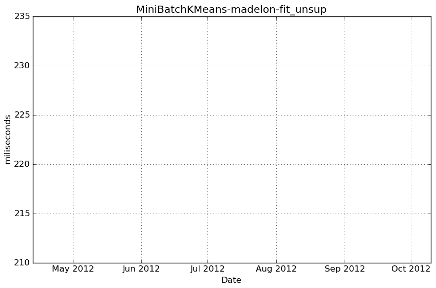Memory usage
Profiler output
15236 function calls in 0.848 seconds
Ordered by: cumulative time
ncalls tottime percall cumtime percall filename:lineno(function)
1 0.000 0.000 0.848 0.848 /hardmnt/goblin1/home/nivlad/balls/vbench/vbench/benchmark.py:257(f)
1 0.000 0.000 0.848 0.848 <f>:1(<module>)
1 0.202 0.202 0.848 0.848 /tmp/vb_sklearn/sklearn/cluster/k_means_.py:1067(fit)
72 0.264 0.004 0.474 0.007 /tmp/vb_sklearn/sklearn/cluster/k_means_.py:830(_mini_batch_step)
103 0.015 0.000 0.259 0.003 /tmp/vb_sklearn/sklearn/metrics/pairwise.py:101(euclidean_distances)
76 0.003 0.000 0.211 0.003 /tmp/vb_sklearn/sklearn/cluster/k_means_.py:431(_labels_inertia)
76 0.018 0.000 0.203 0.003 /tmp/vb_sklearn/sklearn/cluster/k_means_.py:414(_labels_inertia_precompute_dense)
103 0.002 0.000 0.152 0.001 /tmp/vb_sklearn/sklearn/utils/extmath.py:70(safe_sparse_dot)
103 0.146 0.001 0.146 0.001 {numpy.core.multiarray.dot}
3 0.027 0.009 0.113 0.038 /tmp/vb_sklearn/sklearn/cluster/k_means_.py:525(_init_centroids)
2088 0.095 0.000 0.095 0.000 {method 'sum' of 'numpy.ndarray' objects}
3 0.007 0.002 0.086 0.029 /tmp/vb_sklearn/sklearn/cluster/k_means_.py:36(_k_init)
103 0.002 0.000 0.077 0.001 /tmp/vb_sklearn/sklearn/metrics/pairwise.py:52(check_pairwise_arrays)
515 0.008 0.000 0.058 0.000 /tmp/vb_sklearn/sklearn/utils/validation.py:10(assert_all_finite)
309 0.002 0.000 0.048 0.000 /tmp/vb_sklearn/sklearn/utils/validation.py:71(atleast2d_or_csr)
749 0.004 0.000 0.037 0.000 /home/nivlad/.local/lib/python2.7/site-packages/numpy/core/fromnumeric.py:1379(sum)
206 0.002 0.000 0.036 0.000 /tmp/vb_sklearn/sklearn/utils/validation.py:23(safe_asarray)
1004 0.003 0.000 0.021 0.000 /home/nivlad/.local/lib/python2.7/site-packages/scipy/sparse/base.py:553(isspmatrix)
1004 0.012 0.000 0.018 0.000 /home/nivlad/.local/lib/python2.7/site-packages/scipy/sparse/sputils.py:116(_isinstance)
1 0.009 0.009 0.012 0.012 /tmp/vb_sklearn/sklearn/cluster/k_means_.py:404(_squared_norms)
309 0.002 0.000 0.010 0.000 /tmp/vb_sklearn/sklearn/utils/validation.py:66(array2d)
309 0.004 0.000 0.007 0.000 /home/nivlad/.local/lib/python2.7/site-packages/numpy/core/shape_base.py:58(atleast_2d)
2008 0.004 0.000 0.004 0.000 {method 'split' of 'str' objects}
1765 0.004 0.000 0.004 0.000 {isinstance}
515 0.002 0.000 0.003 0.000 /home/nivlad/.local/lib/python2.7/site-packages/numpy/core/numeric.py:167(asarray)
69 0.002 0.000 0.003 0.000 /tmp/vb_sklearn/sklearn/cluster/k_means_.py:898(_mini_batch_convergence)
825 0.003 0.000 0.003 0.000 {numpy.core.multiarray.array}
309 0.001 0.000 0.002 0.000 /home/nivlad/.local/lib/python2.7/site-packages/numpy/core/numeric.py:237(asanyarray)
76 0.001 0.000 0.002 0.000 /home/nivlad/.local/lib/python2.7/site-packages/numpy/core/numeric.py:1791(ones)
231 0.002 0.000 0.002 0.000 {numpy.core.multiarray.empty}
228 0.001 0.000 0.001 0.000 {method 'fill' of 'numpy.ndarray' objects}
73 0.001 0.000 0.001 0.000 {method 'random_integers' of 'mtrand.RandomState' objects}
1134 0.001 0.000 0.001 0.000 {len}
310 0.000 0.000 0.000 0.000 {method 'append' of 'list' objects}
24 0.000 0.000 0.000 0.000 {method 'cumsum' of 'numpy.ndarray' objects}
24 0.000 0.000 0.000 0.000 {method 'random_sample' of 'mtrand.RandomState' objects}
149 0.000 0.000 0.000 0.000 {range}
24 0.000 0.000 0.000 0.000 /home/nivlad/.local/lib/python2.7/site-packages/numpy/core/fromnumeric.py:757(searchsorted)
276 0.000 0.000 0.000 0.000 {method 'get' of 'dict' objects}
24 0.000 0.000 0.000 0.000 {method 'searchsorted' of 'numpy.ndarray' objects}
7 0.000 0.000 0.000 0.000 /tmp/vb_sklearn/sklearn/utils/validation.py:177(check_random_state)
1 0.000 0.000 0.000 0.000 /tmp/vb_sklearn/sklearn/utils/validation.py:95(check_arrays)
9 0.000 0.000 0.000 0.000 {numpy.core.multiarray.zeros}
1 0.000 0.000 0.000 0.000 /home/nivlad/.local/lib/python2.7/site-packages/numpy/core/numeric.py:289(ascontiguousarray)
2 0.000 0.000 0.000 0.000 /tmp/vb_sklearn/sklearn/utils/validation.py:88(_num_samples)
3 0.000 0.000 0.000 0.000 {method 'randint' of 'mtrand.RandomState' objects}
5 0.000 0.000 0.000 0.000 {hasattr}
4 0.000 0.000 0.000 0.000 {method 'pop' of 'dict' objects}
1 0.000 0.000 0.000 0.000 {method 'disable' of '_lsprof.Profiler' objects}
MiniBatchKMeans-madelon-predict_unsup¶
Benchmark setup
from sklearn.cluster import MiniBatchKMeans
from deps import load_data
kwargs = {'n_clusters': 9}
X, y, X_t, y_t = load_data('madelon')
obj = MiniBatchKMeans(**kwargs)
obj.fit(X)
Benchmark statement
obj.predict(X_t)
Execution time
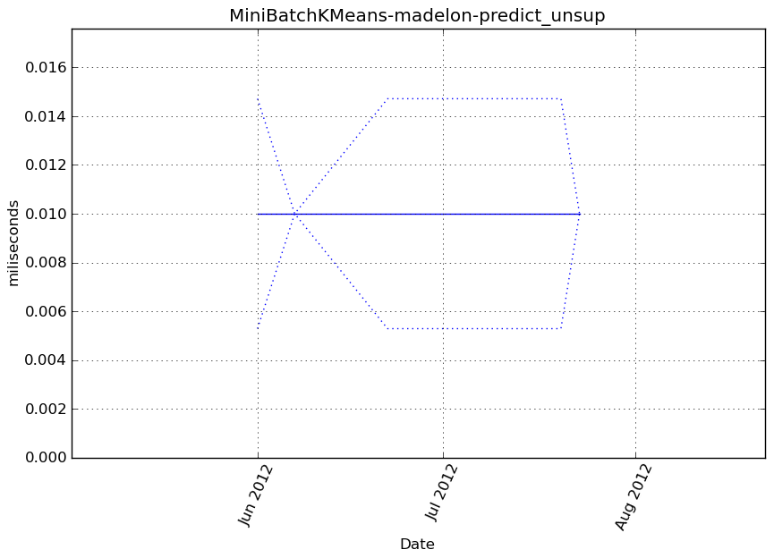Memory usage
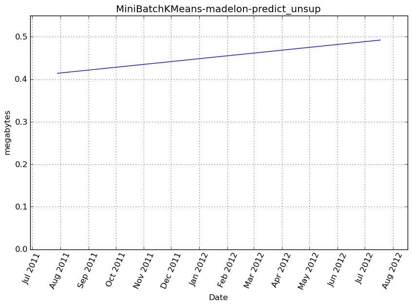Profiler output
147 function calls in 0.014 seconds
Ordered by: cumulative time
ncalls tottime percall cumtime percall filename:lineno(function)
1 0.000 0.000 0.014 0.014 /hardmnt/goblin1/home/nivlad/balls/vbench/vbench/benchmark.py:257(f)
1 0.000 0.000 0.014 0.014 <f>:1(<module>)
1 0.000 0.000 0.014 0.014 /tmp/vb_sklearn/sklearn/cluster/k_means_.py:789(predict)
1 0.000 0.000 0.009 0.009 /tmp/vb_sklearn/sklearn/cluster/k_means_.py:431(_labels_inertia)
1 0.000 0.000 0.009 0.009 /tmp/vb_sklearn/sklearn/cluster/k_means_.py:414(_labels_inertia_precompute_dense)
1 0.000 0.000 0.009 0.009 /tmp/vb_sklearn/sklearn/metrics/pairwise.py:101(euclidean_distances)
1 0.000 0.000 0.007 0.007 /tmp/vb_sklearn/sklearn/utils/extmath.py:70(safe_sparse_dot)
1 0.007 0.007 0.007 0.007 {numpy.core.multiarray.dot}
1 0.003 0.003 0.004 0.004 /tmp/vb_sklearn/sklearn/cluster/k_means_.py:404(_squared_norms)
9 0.003 0.000 0.003 0.000 {method 'sum' of 'numpy.ndarray' objects}
6 0.000 0.000 0.002 0.000 /tmp/vb_sklearn/sklearn/utils/validation.py:10(assert_all_finite)
4 0.000 0.000 0.002 0.000 /tmp/vb_sklearn/sklearn/utils/validation.py:71(atleast2d_or_csr)
1 0.000 0.000 0.002 0.002 /tmp/vb_sklearn/sklearn/metrics/pairwise.py:52(check_pairwise_arrays)
1 0.000 0.000 0.001 0.001 /tmp/vb_sklearn/sklearn/cluster/k_means_.py:718(_check_test_data)
2 0.000 0.000 0.001 0.000 /tmp/vb_sklearn/sklearn/utils/validation.py:23(safe_asarray)
11 0.000 0.000 0.000 0.000 /home/nivlad/.local/lib/python2.7/site-packages/scipy/sparse/base.py:553(isspmatrix)
11 0.000 0.000 0.000 0.000 /home/nivlad/.local/lib/python2.7/site-packages/scipy/sparse/sputils.py:116(_isinstance)
4 0.000 0.000 0.000 0.000 /tmp/vb_sklearn/sklearn/utils/validation.py:66(array2d)
4 0.000 0.000 0.000 0.000 /home/nivlad/.local/lib/python2.7/site-packages/numpy/core/shape_base.py:58(atleast_2d)
22 0.000 0.000 0.000 0.000 {method 'split' of 'str' objects}
1 0.000 0.000 0.000 0.000 /home/nivlad/.local/lib/python2.7/site-packages/numpy/core/fromnumeric.py:1379(sum)
3 0.000 0.000 0.000 0.000 {numpy.core.multiarray.empty}
4 0.000 0.000 0.000 0.000 /home/nivlad/.local/lib/python2.7/site-packages/numpy/core/numeric.py:237(asanyarray)
1 0.000 0.000 0.000 0.000 /home/nivlad/.local/lib/python2.7/site-packages/numpy/core/numeric.py:1791(ones)
6 0.000 0.000 0.000 0.000 /home/nivlad/.local/lib/python2.7/site-packages/numpy/core/numeric.py:167(asarray)
10 0.000 0.000 0.000 0.000 {numpy.core.multiarray.array}
12 0.000 0.000 0.000 0.000 {isinstance}
3 0.000 0.000 0.000 0.000 {method 'fill' of 'numpy.ndarray' objects}
14 0.000 0.000 0.000 0.000 {len}
1 0.000 0.000 0.000 0.000 /tmp/vb_sklearn/sklearn/cluster/k_means_.py:734(_check_fitted)
1 0.000 0.000 0.000 0.000 {numpy.core.multiarray.zeros}
4 0.000 0.000 0.000 0.000 {method 'append' of 'list' objects}
1 0.000 0.000 0.000 0.000 {range}
1 0.000 0.000 0.000 0.000 {hasattr}
1 0.000 0.000 0.000 0.000 {method 'disable' of '_lsprof.Profiler' objects}
SpectralClustering-minimadelon-fit_unsup¶
Benchmark setup
from sklearn.cluster import SpectralClustering
from deps import load_data
kwargs = {'n_clusters': 9}
X, y, X_t, y_t = load_data('minimadelon')
obj = SpectralClustering(**kwargs)
Benchmark statement
obj.fit(X)
Execution time
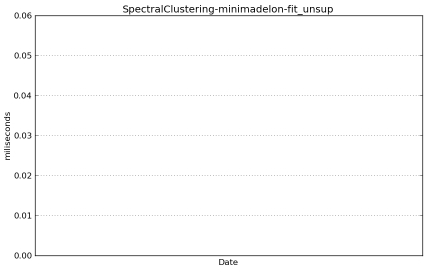Memory usage
SpectralClustering-minimadelon-predict_unsup¶
Benchmark setup
from sklearn.cluster import SpectralClustering
from deps import load_data
kwargs = {'n_clusters': 9}
X, y, X_t, y_t = load_data('minimadelon')
obj = SpectralClustering(**kwargs)
obj.fit(X)
Benchmark statement
obj.predict(X_t)
Execution time
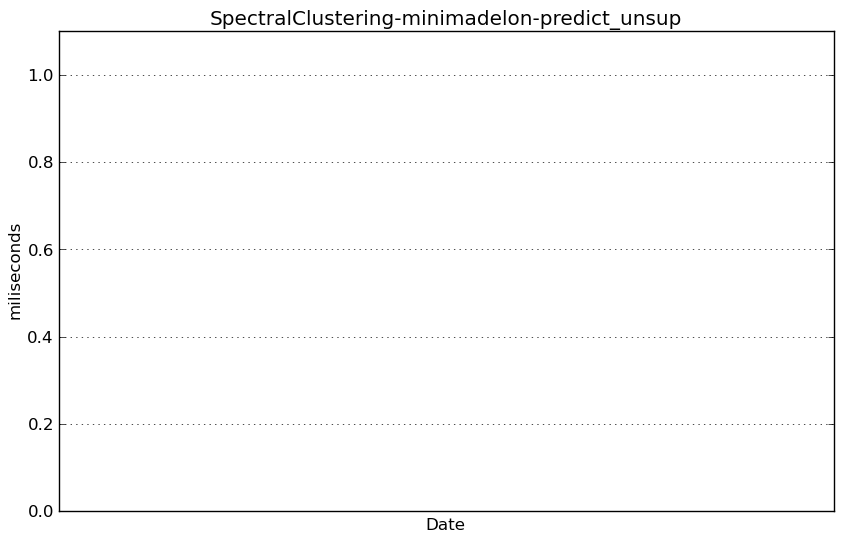Memory usage
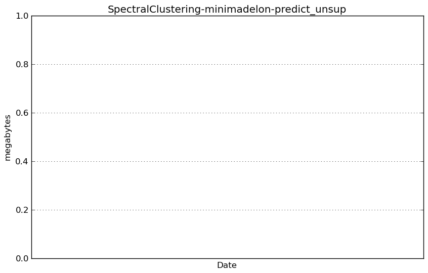SpectralClustering-blobs-fit_unsup¶
Benchmark setup
from sklearn.cluster import SpectralClustering
from deps import load_data
kwargs = {'n_clusters': 9}
X, y, X_t, y_t = load_data('blobs')
obj = SpectralClustering(**kwargs)
Benchmark statement
obj.fit(X)
Execution time
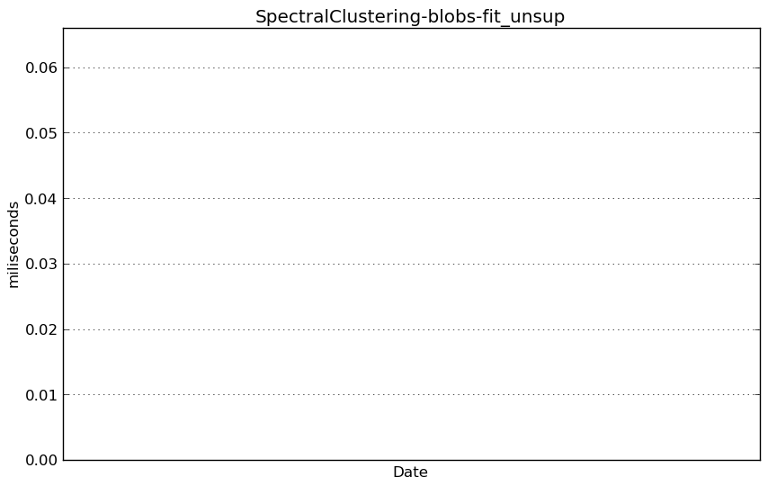Memory usage
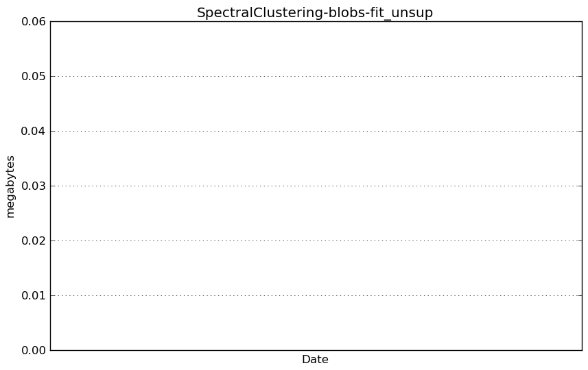SpectralClustering-blobs-predict_unsup¶
Benchmark setup
from sklearn.cluster import SpectralClustering
from deps import load_data
kwargs = {'n_clusters': 9}
X, y, X_t, y_t = load_data('blobs')
obj = SpectralClustering(**kwargs)
obj.fit(X)
Benchmark statement
obj.predict(X_t)
Execution time
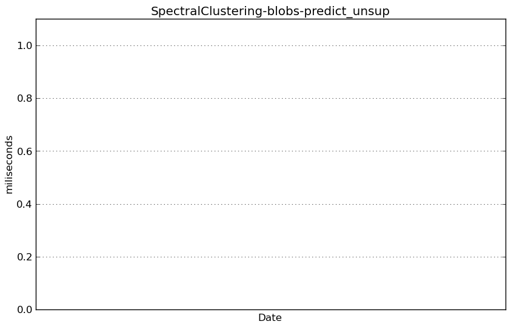Memory usage
Ward-minimadelon-fit_unsup¶
Benchmark setup
from sklearn.cluster import Ward
from deps import load_data
kwargs = {}
X, y, X_t, y_t = load_data('minimadelon')
obj = Ward(**kwargs)
Benchmark statement
obj.fit(X)
Execution time
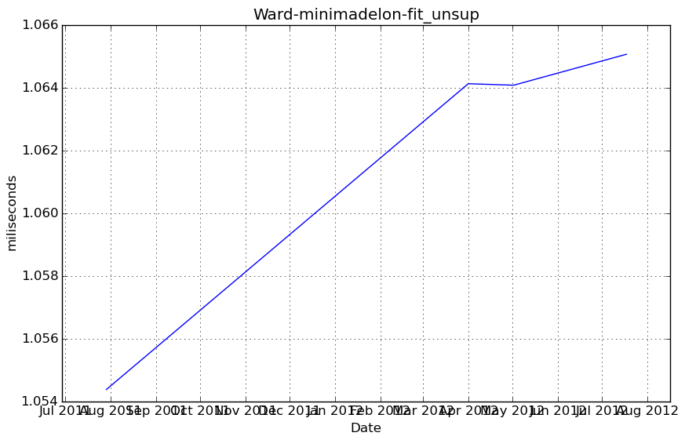Memory usage
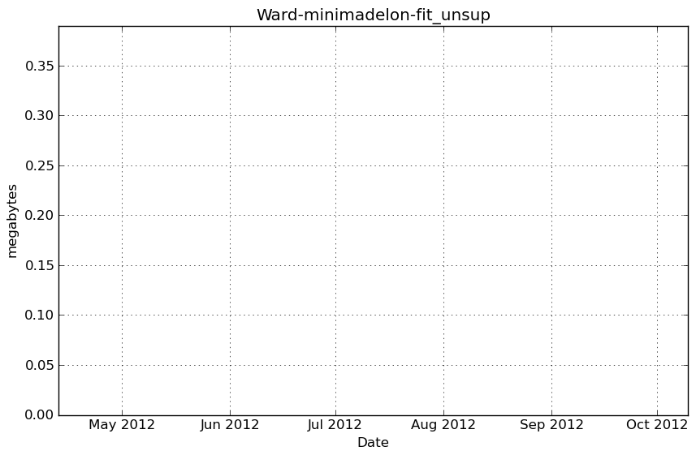Profiler output
52 function calls in 0.001 seconds
Ordered by: cumulative time
ncalls tottime percall cumtime percall filename:lineno(function)
1 0.000 0.000 0.001 0.001 /hardmnt/goblin1/home/nivlad/balls/vbench/vbench/benchmark.py:257(f)
1 0.000 0.000 0.001 0.001 <f>:1(<module>)
1 0.000 0.000 0.001 0.001 /tmp/vb_sklearn/sklearn/cluster/hierarchical.py:304(fit)
1 0.000 0.000 0.001 0.001 /tmp/vb_sklearn/sklearn/cluster/hierarchical.py:30(ward_tree)
1 0.000 0.000 0.001 0.001 /home/nivlad/.local/lib/python2.7/site-packages/scipy/cluster/hierarchy.py:423(ward)
1 0.000 0.000 0.001 0.001 /home/nivlad/.local/lib/python2.7/site-packages/scipy/cluster/hierarchy.py:464(linkage)
1 0.000 0.000 0.001 0.001 /home/nivlad/.local/lib/python2.7/site-packages/scipy/spatial/distance.py:916(pdist)
1 0.000 0.000 0.000 0.000 {scipy.spatial._distance_wrap.pdist_euclidean_wrap}
1 0.000 0.000 0.000 0.000 {scipy.cluster._hierarchy_wrap.linkage_euclid_wrap}
1 0.000 0.000 0.000 0.000 /tmp/vb_sklearn/sklearn/cluster/hierarchical.py:210(_hc_cut)
2 0.000 0.000 0.000 0.000 {sklearn.cluster._hierarchical._hc_get_descendent}
1 0.000 0.000 0.000 0.000 /home/nivlad/.local/lib/python2.7/site-packages/scipy/spatial/distance.py:132(_copy_arrays_if_base_present)
1 0.000 0.000 0.000 0.000 /home/nivlad/.local/lib/python2.7/site-packages/scipy/spatial/distance.py:120(_copy_array_if_base_present)
1 0.000 0.000 0.000 0.000 /home/nivlad/.local/lib/python2.7/site-packages/numpy/core/numerictypes.py:703(issubsctype)
2 0.000 0.000 0.000 0.000 /home/nivlad/.local/lib/python2.7/site-packages/numpy/core/numerictypes.py:608(obj2sctype)
3 0.000 0.000 0.000 0.000 /home/nivlad/.local/lib/python2.7/site-packages/numpy/core/numeric.py:167(asarray)
3 0.000 0.000 0.000 0.000 {numpy.core.multiarray.zeros}
1 0.000 0.000 0.000 0.000 {method 'astype' of 'numpy.ndarray' objects}
3 0.000 0.000 0.000 0.000 {numpy.core.multiarray.array}
6 0.000 0.000 0.000 0.000 {isinstance}
1 0.000 0.000 0.000 0.000 {max}
2 0.000 0.000 0.000 0.000 /home/nivlad/.local/lib/python2.7/site-packages/scipy/spatial/distance.py:151(_convert_to_double)
3 0.000 0.000 0.000 0.000 {issubclass}
1 0.000 0.000 0.000 0.000 /home/nivlad/.local/lib/python2.7/site-packages/scipy/cluster/hierarchy.py:912(_convert_to_double)
1 0.000 0.000 0.000 0.000 {_heapq.heappush}
3 0.000 0.000 0.000 0.000 {len}
2 0.000 0.000 0.000 0.000 {method 'keys' of 'dict' objects}
1 0.000 0.000 0.000 0.000 /tmp/vb_sklearn/sklearn/externals/joblib/memory.py:490(cache)
1 0.000 0.000 0.000 0.000 {range}
1 0.000 0.000 0.000 0.000 {_heapq.heappushpop}
1 0.000 0.000 0.000 0.000 {method 'lower' of 'str' objects}
1 0.000 0.000 0.000 0.000 {callable}
1 0.000 0.000 0.000 0.000 {method 'disable' of '_lsprof.Profiler' objects}
Ward-blobs-fit_unsup¶
Benchmark setup
from sklearn.cluster import Ward
from deps import load_data
kwargs = {}
X, y, X_t, y_t = load_data('blobs')
obj = Ward(**kwargs)
Benchmark statement
obj.fit(X)
Execution time
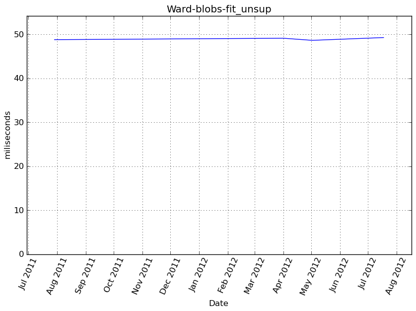Memory usage
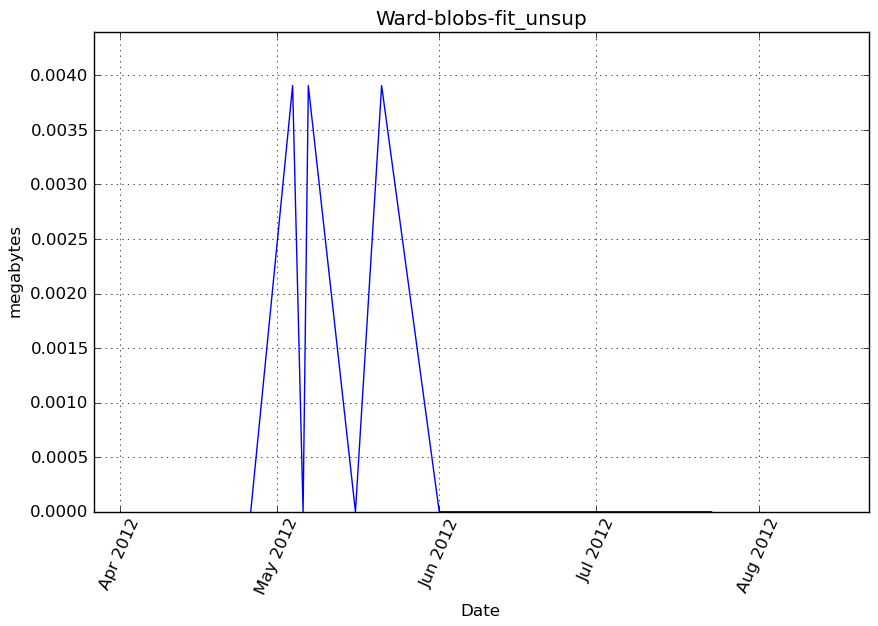Profiler output
52 function calls in 0.050 seconds
Ordered by: cumulative time
ncalls tottime percall cumtime percall filename:lineno(function)
1 0.000 0.000 0.050 0.050 /hardmnt/goblin1/home/nivlad/balls/vbench/vbench/benchmark.py:257(f)
1 0.000 0.000 0.050 0.050 <f>:1(<module>)
1 0.000 0.000 0.050 0.050 /tmp/vb_sklearn/sklearn/cluster/hierarchical.py:304(fit)
1 0.000 0.000 0.049 0.049 /tmp/vb_sklearn/sklearn/cluster/hierarchical.py:30(ward_tree)
1 0.000 0.000 0.049 0.049 /home/nivlad/.local/lib/python2.7/site-packages/scipy/cluster/hierarchy.py:423(ward)
1 0.000 0.000 0.049 0.049 /home/nivlad/.local/lib/python2.7/site-packages/scipy/cluster/hierarchy.py:464(linkage)
1 0.043 0.043 0.043 0.043 {scipy.cluster._hierarchy_wrap.linkage_euclid_wrap}
1 0.000 0.000 0.006 0.006 /home/nivlad/.local/lib/python2.7/site-packages/scipy/spatial/distance.py:916(pdist)
1 0.006 0.006 0.006 0.006 {scipy.spatial._distance_wrap.pdist_euclidean_wrap}
1 0.000 0.000 0.001 0.001 /tmp/vb_sklearn/sklearn/cluster/hierarchical.py:210(_hc_cut)
2 0.001 0.000 0.001 0.000 {sklearn.cluster._hierarchical._hc_get_descendent}
3 0.000 0.000 0.000 0.000 {numpy.core.multiarray.zeros}
1 0.000 0.000 0.000 0.000 /home/nivlad/.local/lib/python2.7/site-packages/scipy/spatial/distance.py:132(_copy_arrays_if_base_present)
1 0.000 0.000 0.000 0.000 /home/nivlad/.local/lib/python2.7/site-packages/scipy/spatial/distance.py:120(_copy_array_if_base_present)
1 0.000 0.000 0.000 0.000 /home/nivlad/.local/lib/python2.7/site-packages/numpy/core/numerictypes.py:703(issubsctype)
2 0.000 0.000 0.000 0.000 /home/nivlad/.local/lib/python2.7/site-packages/numpy/core/numerictypes.py:608(obj2sctype)
1 0.000 0.000 0.000 0.000 {method 'astype' of 'numpy.ndarray' objects}
3 0.000 0.000 0.000 0.000 /home/nivlad/.local/lib/python2.7/site-packages/numpy/core/numeric.py:167(asarray)
1 0.000 0.000 0.000 0.000 {max}
3 0.000 0.000 0.000 0.000 {numpy.core.multiarray.array}
6 0.000 0.000 0.000 0.000 {isinstance}
2 0.000 0.000 0.000 0.000 /home/nivlad/.local/lib/python2.7/site-packages/scipy/spatial/distance.py:151(_convert_to_double)
3 0.000 0.000 0.000 0.000 {issubclass}
1 0.000 0.000 0.000 0.000 /home/nivlad/.local/lib/python2.7/site-packages/scipy/cluster/hierarchy.py:912(_convert_to_double)
1 0.000 0.000 0.000 0.000 {_heapq.heappush}
2 0.000 0.000 0.000 0.000 {method 'keys' of 'dict' objects}
3 0.000 0.000 0.000 0.000 {len}
1 0.000 0.000 0.000 0.000 /tmp/vb_sklearn/sklearn/externals/joblib/memory.py:490(cache)
1 0.000 0.000 0.000 0.000 {range}
1 0.000 0.000 0.000 0.000 {_heapq.heappushpop}
1 0.000 0.000 0.000 0.000 {method 'lower' of 'str' objects}
1 0.000 0.000 0.000 0.000 {callable}
1 0.000 0.000 0.000 0.000 {method 'disable' of '_lsprof.Profiler' objects}
MeanShift-minimadelon-fit_unsup¶
Benchmark setup
from sklearn.cluster import MeanShift
from deps import load_data
kwargs = {}
X, y, X_t, y_t = load_data('minimadelon')
obj = MeanShift(**kwargs)
Benchmark statement
obj.fit(X)
Execution time
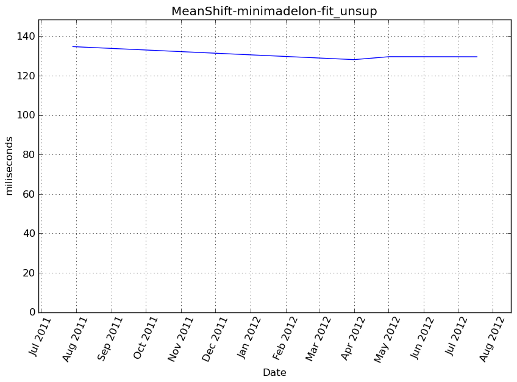Memory usage
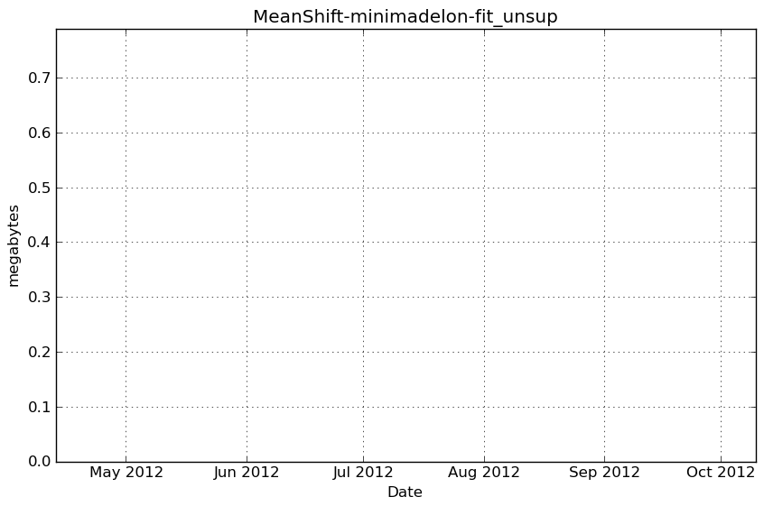Profiler output
6730 function calls in 0.142 seconds
Ordered by: cumulative time
ncalls tottime percall cumtime percall filename:lineno(function)
1 0.000 0.000 0.142 0.142 /hardmnt/goblin1/home/nivlad/balls/vbench/vbench/benchmark.py:257(f)
1 0.000 0.000 0.142 0.142 <f>:1(<module>)
1 0.000 0.000 0.142 0.142 /tmp/vb_sklearn/sklearn/cluster/mean_shift_.py:265(fit)
1 0.072 0.072 0.142 0.142 /tmp/vb_sklearn/sklearn/cluster/mean_shift_.py:51(mean_shift)
114 0.001 0.000 0.050 0.000 /tmp/vb_sklearn/sklearn/neighbors/base.py:334(radius_neighbors)
124 0.001 0.000 0.030 0.000 /tmp/vb_sklearn/sklearn/utils/validation.py:71(atleast2d_or_csr)
236 0.001 0.000 0.027 0.000 /tmp/vb_sklearn/sklearn/utils/validation.py:66(array2d)
236 0.002 0.000 0.024 0.000 /home/nivlad/.local/lib/python2.7/site-packages/numpy/core/shape_base.py:58(atleast_2d)
823 0.023 0.000 0.023 0.000 {numpy.core.multiarray.array}
347 0.001 0.000 0.022 0.000 /home/nivlad/.local/lib/python2.7/site-packages/numpy/core/numeric.py:237(asanyarray)
111 0.011 0.000 0.019 0.000 {method 'query_radius' of 'sklearn.neighbors.ball_tree.BallTree' objects}
112 0.000 0.000 0.009 0.000 /home/nivlad/.local/lib/python2.7/site-packages/numpy/core/fromnumeric.py:2299(mean)
112 0.009 0.000 0.009 0.000 {method 'mean' of 'numpy.ndarray' objects}
111 0.002 0.000 0.006 0.000 /tmp/vb_sklearn/sklearn/utils/extmath.py:15(norm)
111 0.003 0.000 0.004 0.000 /home/nivlad/.local/lib/python2.7/site-packages/scipy/linalg/blas.py:30(get_blas_funcs)
136 0.002 0.000 0.003 0.000 /tmp/vb_sklearn/sklearn/utils/validation.py:10(assert_all_finite)
156 0.000 0.000 0.003 0.000 /home/nivlad/.local/lib/python2.7/site-packages/scipy/sparse/base.py:553(isspmatrix)
475 0.001 0.000 0.003 0.000 /home/nivlad/.local/lib/python2.7/site-packages/numpy/core/numeric.py:167(asarray)
156 0.002 0.000 0.003 0.000 /home/nivlad/.local/lib/python2.7/site-packages/scipy/sparse/sputils.py:116(_isinstance)
111 0.001 0.000 0.002 0.000 /home/nivlad/.local/lib/python2.7/site-packages/numpy/core/shape_base.py:6(atleast_1d)
2 0.000 0.000 0.002 0.001 /tmp/vb_sklearn/sklearn/neighbors/base.py:156(kneighbors)
4 0.000 0.000 0.002 0.001 /tmp/vb_sklearn/sklearn/metrics/pairwise.py:404(pairwise_distances)
4 0.000 0.000 0.002 0.001 /tmp/vb_sklearn/sklearn/metrics/pairwise.py:101(euclidean_distances)
144 0.002 0.000 0.002 0.000 {method 'sum' of 'numpy.ndarray' objects}
1 0.000 0.000 0.002 0.002 /tmp/vb_sklearn/sklearn/cluster/mean_shift_.py:16(estimate_bandwidth)
1 0.001 0.001 0.001 0.001 {method 'query' of 'sklearn.neighbors.ball_tree.BallTree' objects}
112 0.001 0.000 0.001 0.000 /home/nivlad/.local/lib/python2.7/site-packages/numpy/core/numeric.py:1791(ones)
4 0.000 0.000 0.001 0.000 /tmp/vb_sklearn/sklearn/metrics/pairwise.py:52(check_pairwise_arrays)
4 0.000 0.000 0.001 0.000 /tmp/vb_sklearn/sklearn/neighbors/base.py:576(fit)
4 0.000 0.000 0.001 0.000 /tmp/vb_sklearn/sklearn/neighbors/base.py:96(_fit)
12 0.000 0.000 0.001 0.000 /tmp/vb_sklearn/sklearn/utils/validation.py:23(safe_asarray)
1080 0.001 0.000 0.001 0.000 {len}
312 0.001 0.000 0.001 0.000 {method 'split' of 'str' objects}
111 0.001 0.000 0.001 0.000 {method 'reshape' of 'numpy.ndarray' objects}
288 0.001 0.000 0.001 0.000 {isinstance}
112 0.000 0.000 0.000 0.000 {numpy.core.multiarray.empty}
458 0.000 0.000 0.000 0.000 {method 'append' of 'list' objects}
4 0.000 0.000 0.000 0.000 /tmp/vb_sklearn/sklearn/utils/extmath.py:70(safe_sparse_dot)
112 0.000 0.000 0.000 0.000 {method 'fill' of 'numpy.ndarray' objects}
8 0.000 0.000 0.000 0.000 /home/nivlad/.local/lib/python2.7/site-packages/numpy/core/fromnumeric.py:1379(sum)
222 0.000 0.000 0.000 0.000 {method 'get' of 'dict' objects}
111 0.000 0.000 0.000 0.000 {getattr}
111 0.000 0.000 0.000 0.000 {max}
4 0.000 0.000 0.000 0.000 {numpy.core.multiarray.dot}
4 0.000 0.000 0.000 0.000 /tmp/vb_sklearn/sklearn/neighbors/unsupervised.py:85(__init__)
1 0.000 0.000 0.000 0.000 /home/nivlad/.local/lib/python2.7/site-packages/numpy/core/fromnumeric.py:1774(amax)
1 0.000 0.000 0.000 0.000 {sorted}
1 0.000 0.000 0.000 0.000 {method 'max' of 'numpy.ndarray' objects}
1 0.000 0.000 0.000 0.000 /tmp/vb_sklearn/sklearn/utils/validation.py:177(check_random_state)
4 0.000 0.000 0.000 0.000 /tmp/vb_sklearn/sklearn/neighbors/base.py:77(_init_params)
1 0.000 0.000 0.000 0.000 /home/nivlad/.local/lib/python2.7/site-packages/numpy/core/fromnumeric.py:1508(any)
1 0.000 0.000 0.000 0.000 {method 'argsort' of 'numpy.ndarray' objects}
3 0.000 0.000 0.000 0.000 {numpy.core.multiarray.where}
1 0.000 0.000 0.000 0.000 {method 'any' of 'numpy.ndarray' objects}
2 0.000 0.000 0.000 0.000 {numpy.core.multiarray.arange}
1 0.000 0.000 0.000 0.000 {method 'flatten' of 'numpy.ndarray' objects}
1 0.000 0.000 0.000 0.000 {numpy.core.multiarray.zeros}
6 0.000 0.000 0.000 0.000 /tmp/vb_sklearn/sklearn/cluster/mean_shift_.py:134(<lambda>)
1 0.000 0.000 0.000 0.000 {method 'items' of 'dict' objects}
1 0.000 0.000 0.000 0.000 {method 'disable' of '_lsprof.Profiler' objects}
MeanShift-blobs-fit_unsup¶
Benchmark setup
from sklearn.cluster import MeanShift
from deps import load_data
kwargs = {}
X, y, X_t, y_t = load_data('blobs')
obj = MeanShift(**kwargs)
Benchmark statement
obj.fit(X)
Execution time
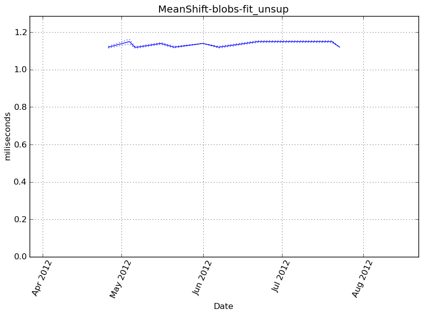Memory usage
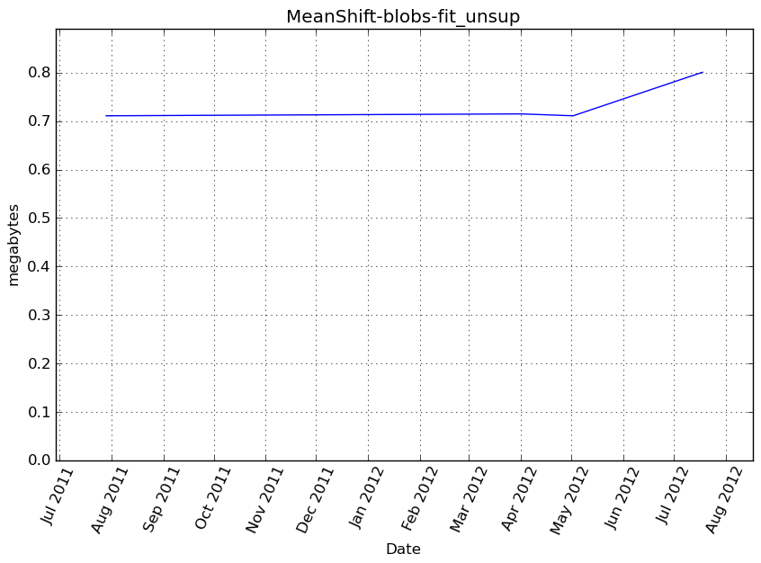Profiler output
62265 function calls in 1.233 seconds
Ordered by: cumulative time
ncalls tottime percall cumtime percall filename:lineno(function)
1 0.000 0.000 1.233 1.233 /hardmnt/goblin1/home/nivlad/balls/vbench/vbench/benchmark.py:257(f)
1 0.000 0.000 1.233 1.233 <f>:1(<module>)
1 0.000 0.000 1.233 1.233 /tmp/vb_sklearn/sklearn/cluster/mean_shift_.py:265(fit)
1 0.767 0.767 1.233 1.233 /tmp/vb_sklearn/sklearn/cluster/mean_shift_.py:51(mean_shift)
1121 0.009 0.000 0.316 0.000 /tmp/vb_sklearn/sklearn/neighbors/base.py:334(radius_neighbors)
1120 0.105 0.000 0.180 0.000 {method 'query_radius' of 'sklearn.neighbors.ball_tree.BallTree' objects}
1127 0.007 0.000 0.126 0.000 /tmp/vb_sklearn/sklearn/utils/validation.py:71(atleast2d_or_csr)
2248 0.012 0.000 0.102 0.000 /tmp/vb_sklearn/sklearn/utils/validation.py:66(array2d)
2248 0.021 0.000 0.078 0.000 /home/nivlad/.local/lib/python2.7/site-packages/numpy/core/shape_base.py:58(atleast_2d)
1121 0.004 0.000 0.061 0.000 /home/nivlad/.local/lib/python2.7/site-packages/numpy/core/fromnumeric.py:2299(mean)
7868 0.061 0.000 0.061 0.000 {numpy.core.multiarray.array}
1121 0.057 0.000 0.057 0.000 {method 'mean' of 'numpy.ndarray' objects}
3368 0.010 0.000 0.057 0.000 /home/nivlad/.local/lib/python2.7/site-packages/numpy/core/numeric.py:237(asanyarray)
1120 0.011 0.000 0.053 0.000 /tmp/vb_sklearn/sklearn/utils/extmath.py:15(norm)
1120 0.027 0.000 0.036 0.000 /home/nivlad/.local/lib/python2.7/site-packages/scipy/linalg/blas.py:30(get_blas_funcs)
1 0.000 0.000 0.033 0.033 /tmp/vb_sklearn/sklearn/cluster/mean_shift_.py:16(estimate_bandwidth)
2 0.000 0.000 0.032 0.016 /tmp/vb_sklearn/sklearn/neighbors/base.py:156(kneighbors)
1 0.031 0.031 0.031 0.031 {method 'query' of 'sklearn.neighbors.ball_tree.BallTree' objects}
1135 0.014 0.000 0.026 0.000 /tmp/vb_sklearn/sklearn/utils/validation.py:10(assert_all_finite)
4499 0.012 0.000 0.025 0.000 /home/nivlad/.local/lib/python2.7/site-packages/numpy/core/numeric.py:167(asarray)
1120 0.010 0.000 0.024 0.000 /home/nivlad/.local/lib/python2.7/site-packages/numpy/core/shape_base.py:6(atleast_1d)
1147 0.004 0.000 0.023 0.000 /home/nivlad/.local/lib/python2.7/site-packages/scipy/sparse/base.py:553(isspmatrix)
1147 0.013 0.000 0.019 0.000 /home/nivlad/.local/lib/python2.7/site-packages/scipy/sparse/sputils.py:116(_isinstance)
1121 0.005 0.000 0.013 0.000 /home/nivlad/.local/lib/python2.7/site-packages/numpy/core/numeric.py:1791(ones)
1139 0.012 0.000 0.012 0.000 {method 'sum' of 'numpy.ndarray' objects}
10409 0.008 0.000 0.008 0.000 {len}
1120 0.006 0.000 0.006 0.000 {method 'reshape' of 'numpy.ndarray' objects}
2294 0.005 0.000 0.005 0.000 {method 'split' of 'str' objects}
2284 0.004 0.000 0.004 0.000 {isinstance}
4488 0.004 0.000 0.004 0.000 {method 'append' of 'list' objects}
1121 0.004 0.000 0.004 0.000 {numpy.core.multiarray.empty}
1121 0.004 0.000 0.004 0.000 {method 'fill' of 'numpy.ndarray' objects}
4 0.000 0.000 0.002 0.001 /tmp/vb_sklearn/sklearn/neighbors/base.py:576(fit)
4 0.002 0.000 0.002 0.001 /tmp/vb_sklearn/sklearn/neighbors/base.py:96(_fit)
2240 0.002 0.000 0.002 0.000 {method 'get' of 'dict' objects}
1120 0.002 0.000 0.002 0.000 {getattr}
1120 0.002 0.000 0.002 0.000 {max}
2 0.000 0.000 0.001 0.001 /tmp/vb_sklearn/sklearn/metrics/pairwise.py:404(pairwise_distances)
2 0.000 0.000 0.001 0.001 /tmp/vb_sklearn/sklearn/metrics/pairwise.py:101(euclidean_distances)
2 0.000 0.000 0.001 0.000 /tmp/vb_sklearn/sklearn/metrics/pairwise.py:52(check_pairwise_arrays)
8 0.000 0.000 0.001 0.000 /tmp/vb_sklearn/sklearn/utils/validation.py:23(safe_asarray)
1 0.000 0.000 0.000 0.000 /home/nivlad/.local/lib/python2.7/site-packages/numpy/core/fromnumeric.py:1774(amax)
1 0.000 0.000 0.000 0.000 {method 'max' of 'numpy.ndarray' objects}
2 0.000 0.000 0.000 0.000 /tmp/vb_sklearn/sklearn/utils/extmath.py:70(safe_sparse_dot)
4 0.000 0.000 0.000 0.000 /home/nivlad/.local/lib/python2.7/site-packages/numpy/core/fromnumeric.py:1379(sum)
2 0.000 0.000 0.000 0.000 {numpy.core.multiarray.dot}
4 0.000 0.000 0.000 0.000 /tmp/vb_sklearn/sklearn/neighbors/unsupervised.py:85(__init__)
4 0.000 0.000 0.000 0.000 /tmp/vb_sklearn/sklearn/neighbors/base.py:77(_init_params)
1 0.000 0.000 0.000 0.000 /tmp/vb_sklearn/sklearn/utils/validation.py:177(check_random_state)
1 0.000 0.000 0.000 0.000 {method 'argsort' of 'numpy.ndarray' objects}
1 0.000 0.000 0.000 0.000 {sorted}
1 0.000 0.000 0.000 0.000 {method 'flatten' of 'numpy.ndarray' objects}
1 0.000 0.000 0.000 0.000 {numpy.core.multiarray.zeros}
1 0.000 0.000 0.000 0.000 {numpy.core.multiarray.arange}
1 0.000 0.000 0.000 0.000 {numpy.core.multiarray.where}
1 0.000 0.000 0.000 0.000 {method 'items' of 'dict' objects}
1 0.000 0.000 0.000 0.000 /tmp/vb_sklearn/sklearn/cluster/mean_shift_.py:134(<lambda>)
1 0.000 0.000 0.000 0.000 {method 'disable' of '_lsprof.Profiler' objects}